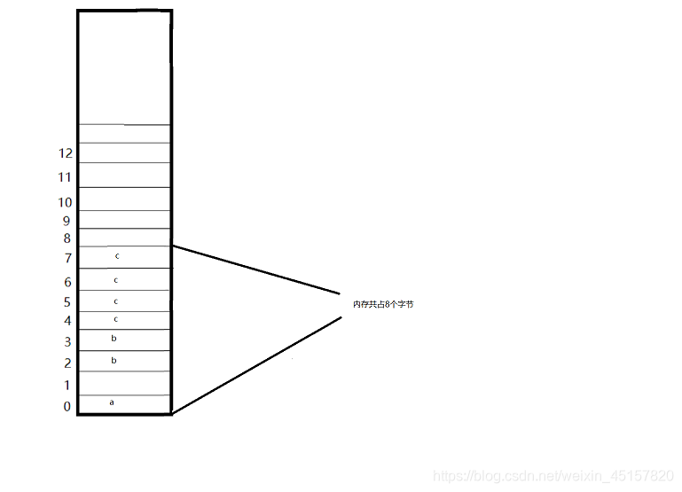
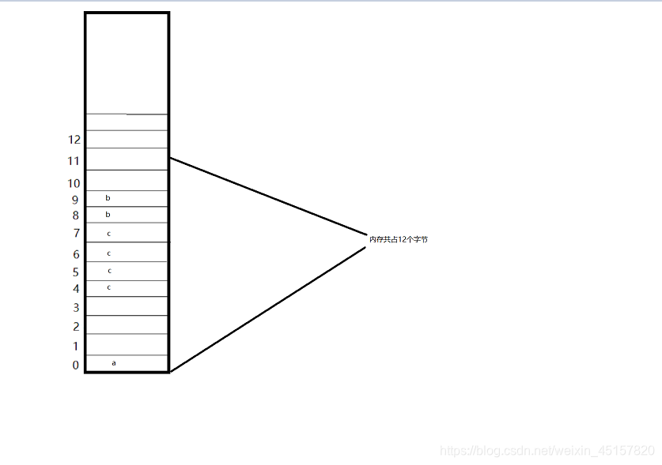
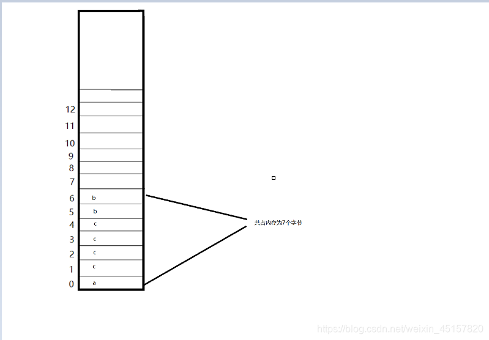
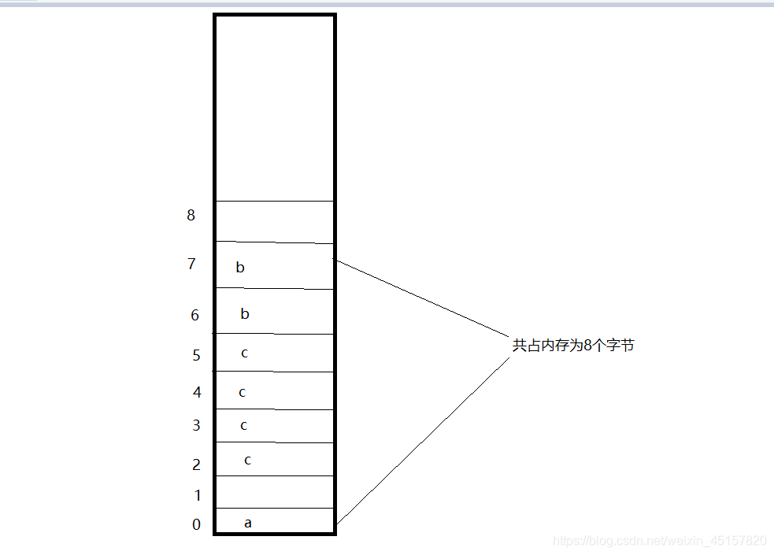

author:zhangtao
link:[https://blog.csdn.net/weixin_45157820/article/details/112755832]
C语言结构体对齐步骤:
- 结构体各成员对齐.
- 结构体总体对齐
C语言结构体对齐规则:
- 结构体(struct)的数据成员,第一个数据成员存放的地址为结构体变量偏移量为0的地址处.
- 其他结构体成员自身对齐时,存放的地址为min{有效对齐值为自身对齐值, 指定对齐值} 的最小整数倍的地址处. 注:自身对齐值:结构体变量里每个成员的自身大小 注:指定对齐值:有宏 #pragma pack(N) 指定的值,这里面的 N一定是2的幂次方.如1,2,4,8,16等.如果没有通过宏那么在32位Linux主机上默认指定对齐值为4,64位的默认对齐值为8,AMR CPU默认指定对齐值为8; 注:有效对齐值:结构体成员自身对齐时有效对齐值为自身对齐值与指定对齐值中 较小的一个.
- 总体对齐时,字节大小是min{所有成员中自身对齐值最大的, 指定对齐值} 的整数倍. #pragma pack(N) 每个特定平台上的编译器都有自己的默认“对齐系数”(也叫对齐模数)。程序员可以通过预编译命令#pragma pack(n)，n=1,2,4,8,16来改变这一系数，其中的n就是你要指定的“对齐系数”。
实例解析:
例一
1 | //此代码在64位Linux下编写 |
打印结果为:8. 让我们分析一下为什么结果为8. a是char类型,占1个字节.第一个数据成员,放在结构体变量偏移量为0 的地址处. b是short类型,占2个字节,接下来我们要看结构体对齐规则,b的有效对齐值为min{2, 8}=2. 依次查看2的整数倍地址是否可以存放俩个字节.2×0=0 //此地址处已经存放a. 2×1=2 //此地址为空,我们将占有俩个字节的b存放在地址偏移量为2和3处. c是int类型,占4个字节,我们根据结构体对齐规则可知,c的有效对齐值为4.对齐到4的整数倍地址,即地址偏移量为4处.在内存中存放的位置为4,5,6,7. 结构体总对齐字节大小为min{4, 8}=4 的整数倍.此时内存中共占8个字节,正好是4的整数倍,所以sizeof(st_struct1)=8. 占用内存空间如下:

例二
1 | //此代码在64位Linux下编写 |
打印结果为:12. 让我们分析一下为什么结果为12. a是char类型,占1个字节.第一个数据成员,放在结构体变量偏移量为0 的地址处. c是int类型,占4个字节,我们根据结构体对齐规则可知,c的有效对齐值为4.对齐到4的整数倍地址,即地址偏移量为4处.在内存中存放的位置为4,5,6,7. b是short类型,占2个字节,我们根据结构体对齐规则可知,b的有效对齐值为2.对齐到2的整数倍地址,即地址偏移量为8处.在内存中存放的位置为8,9. 结构体总对齐字节大小为min{4, 8}=4 的整数倍.此时内存中共占10个字节,又要求是4的整数倍,所以sizeof(st_struct1)=12.

我们如果想要得到的是类型所占字节之和.例如:char a; int b; short 3;结构体总对齐长度为"1+4+2=7"应该如何定义呢?在例三中可得到答案
例三
1 | //此代码在64位Linux下编写 |
#pragma pack(1):设置结构体的边界对齐为1个字节，也就是所有数据在内存中是连续存储的。 打印结果为:7. 让我们分析一下为什么结果为7. a是char类型,占1个字节.第一个数据成员,放在结构体变量偏移量为0 的地址处. c是int类型,占4个字节,我们根据结构体对齐规则可知,c的有效对齐值为min{4,1}.对齐到1的整数倍地址,即地址偏移量为1处.在内存中存放的位置为1,2,3,4. b是short类型,占2个字节,我们根据结构体对齐规则可知,b的有效对齐值为1,对齐到1的整数倍地址,即地址偏移量为5处.在内存中存放的位置为5,6. 结构体总对齐字节大小为min{4, 1}=1 的整数倍.此时内存中共占7个字节,所以sizeof(st_struct3)=7. 特别注意一下:在使用pragma pack (1)之后,我们最好要unpack. 否则在他之后定义的所有结构体都会按1字节对齐!

例四
1 | //此代码在64位Linux下编写 |
打印结果为:8. 让我们分析一下为什么结果为8. #pragma pack(2):设置结构体的边界对齐为2个字节。 a是char类型,占1个字节.第一个数据成员,放在结构体变量偏移量为0 的地址处. c是int类型,占4个字节,我们根据结构体对齐规则可知,c的有效对齐值为min{4,2}.对齐到2的整数倍地址,即地址偏移量为2处.在内存中存放的位置为2,3,4,5 b是short类型,占2个字节,我们根据结构体对齐规则可知,b的有效对齐值为2,对齐到2的整数倍地址,即地址偏移量为6处.在内存中存放的位置为6,7. 结构体总对齐字节大小为min{4, 2}=2 的整数倍.此时内存中共占8个字节,正好是2的整数倍,所以sizeof(st_struct4)=8.

更新时间：2023-12-22 15:00
转载请注明来源，欢迎指出任何有错误或不够清晰的表达本文链接：https://czruby.github.io/2023/12/22/C语言结构体内存对齐规则/